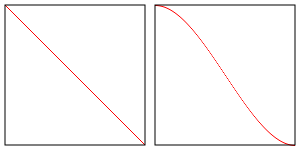

Cet article est la suite de WebGL 3D Éclairage ponctuel. Si vous ne l’avez pas lu, je vous suggère de commencer par là.
Dans le dernier article, nous avons couvert l’éclairage ponctuel où pour chaque point de la surface de notre objet, nous calculons la direction depuis la lumière vers ce point de la surface. Nous faisons ensuite la même chose que nous avons faite pour l’éclairage directionnel, c’est-à-dire que nous avons pris le produit scalaire de la normale de surface (la direction vers laquelle la surface est orientée) et de la direction de la lumière. Cela nous donnait une valeur de 1 si les deux directions correspondaient et donc complètement éclairée. 0 si les deux directions étaient perpendiculaires et -1 si elles étaient opposées. Nous avons utilisé cette valeur directement pour multiplier la couleur de la surface, ce qui nous donnait l’éclairage.
L’éclairage spot est seulement un très petit changement. En fait, si vous pensez créativement à ce que nous avons fait jusqu’à présent, vous pourriez peut-être dériver votre propre solution.
Vous pouvez imaginer une lumière ponctuelle comme un point avec de la lumière allant dans toutes les directions depuis ce point. Pour créer un spot, tout ce que nous devons faire est de choisir une direction depuis ce point, c’est la direction de notre spot. Ensuite, pour chaque direction où la lumière va, nous pouvons prendre le produit scalaire de cette direction avec notre direction de spot choisie. Nous choisirions une limite arbitraire et déciderions si nous sommes dans cette limite, nous éclairons. Si nous ne sommes pas dans cette limite, nous n’éclairons pas.
Dans le diagramme ci-dessus, nous pouvons voir une lumière avec des rayons allant dans toutes les directions et imprimé dessus est leur produit scalaire relatif à la direction. Nous avons ensuite une direction spécifique qui est la direction du spot. Nous choisissons une limite (ci-dessus en degrés). Depuis la limite, nous calculons une limite en espace dot, nous prenons simplement le cosinus de la limite. Si le produit scalaire de notre direction choisie du spot vers la direction de chaque rayon lumineux est au-dessus de la limite en espace dot, alors nous faisons l’éclairage. Sinon, pas d’éclairage.
Pour le dire autrement, disons que la limite est de 20 degrés. Nous pouvons convertir cela en radians et de là en une valeur de -1 à 1 en prenant le cosinus. Appelons cela l’espace dot. En d’autres termes, voici un petit tableau pour les valeurs de limite
limites en
degrés | radians | espace dot
--------+---------+----------
0 | 0.0 | 1.0
22 | .38 | .93
45 | .79 | .71
67 | 1.17 | .39
90 | 1.57 | 0.0
180 | 3.14 | -1.0
Ensuite, nous pouvons simplement vérifier
dotFromDirection = dot(surfaceToLight, -lightDirection)
if (dotFromDirection >= limitInDotSpace) {
// faire l'éclairage
}
Faisons cela
D’abord, modifions notre fragment shader depuis le dernier article.
#version 300 es
precision highp float;
// Passé depuis le vertex shader.
in vec3 v_normal;
in vec3 v_surfaceToLight;
in vec3 v_surfaceToView;
uniform vec4 u_color;
uniform float u_shininess;
+uniform vec3 u_lightDirection;
+uniform float u_limit; // en espace dot
// nous devons déclarer une sortie pour le fragment shader
out vec4 outColor;
void main() {
// parce que v_normal est un varying il est interpolé
// donc ce ne sera pas un vecteur unitaire. La normalisation
// en fera à nouveau un vecteur unitaire
vec3 normal = normalize(v_normal);
vec3 surfaceToLightDirection = normalize(v_surfaceToLight);
vec3 surfaceToViewDirection = normalize(v_surfaceToView);
vec3 halfVector = normalize(surfaceToLightDirection + surfaceToViewDirection);
- float light = dot(normal, surfaceToLightDirection);
+ float light = 0.0;
float specular = 0.0;
+ float dotFromDirection = dot(surfaceToLightDirection,
+ -u_lightDirection);
+ if (dotFromDirection >= u_limit) {
* light = dot(normal, surfaceToLightDirection);
* if (light > 0.0) {
* specular = pow(dot(normal, halfVector), u_shininess);
* }
+ }
outColor = u_color;
// Multiplions seulement la partie couleur (pas l'alpha)
// par la lumière
outColor.rgb *= light;
// Ajoutons simplement la spéculaire
outColor.rgb += specular;
}
Bien sûr, nous devons rechercher les emplacements des uniforms que nous venons d’ajouter.
var lightDirection = [?, ?, ?];
var limit = degToRad(20);
...
var lightDirectionLocation = gl.getUniformLocation(program, "u_lightDirection");
var limitLocation = gl.getUniformLocation(program, "u_limit");
et nous devons les définir
gl.uniform3fv(lightDirectionLocation, lightDirection);
gl.uniform1f(limitLocation, Math.cos(limit));
Et voilà le résultat
Quelques choses à noter : l’une est que nous négativons u_lightDirection ci-dessus.
C’est un de ces choix blanc bonnet ou bonnet blanc
. Nous voulons que les 2 directions que nous comparons pointent dans
la même direction quand elles correspondent. Cela signifie que nous devons comparer
le surfaceToLightDirection avec l’opposé de la direction du spot.
Nous pourrions faire cela de nombreuses façons différentes. Nous pourrions passer la direction négative
lors de la définition de l’uniform. Ce serait mon 1er choix
mais j’ai pensé que ce serait moins confus d’appeler l’uniform u_lightDirection plutôt que u_reverseLightDirection ou u_negativeLightDirection
Une autre chose, et c’est peut-être juste une préférence personnelle, je n’ aime pas utiliser des conditionnels dans les shaders si possible. Je pense que la raison est qu’autrefois les shaders n’avaient pas vraiment de conditionnels. Si vous ajoutiez un conditionnel, le compilateur de shader étendait le code avec beaucoup de multiplications par 0 et 1 ici et là pour qu’il n’y ait pas de vrais conditionnels dans le code. Cela signifiait que l’ajout de conditionnels pouvait faire exploser votre code en expansions combinatoires. Je ne suis pas sûr que ce soit encore vrai mais supprimons les conditionnels quand même juste pour montrer quelques techniques. Vous pouvez décider vous-même si oui ou non les utiliser.
Il existe une fonction GLSL appelée step. Elle prend 2 valeurs et si la
deuxième valeur est supérieure ou égale à la première, elle retourne 1.0. Sinon, elle retourne 0. Vous pourriez l’écrire comme ceci en JavaScript
function step(a, b) {
if (b >= a) {
return 1;
} else {
return 0;
}
}
Utilisons step pour se débarrasser des conditions
float dotFromDirection = dot(surfaceToLightDirection,
-u_lightDirection);
// inLight vaudra 1 si nous sommes dans le spot et 0 sinon
float inLight = step(u_limit, dotFromDirection);
float light = inLight * dot(normal, surfaceToLightDirection);
float specular = inLight * pow(dot(normal, halfVector), u_shininess);
Rien ne change visuellement mais voilà le résultat
Une autre chose est que le spot est actuellement très dur. Nous sommes soit dans le spot soit dehors et les choses deviennent juste noires.
Pour corriger cela, nous pourrions utiliser 2 limites au lieu d’une, une limite intérieure et une limite extérieure. Si nous sommes dans la limite intérieure, alors utiliser 1.0. Si nous sommes en dehors de la limite extérieure, alors utiliser 0.0. Si nous sommes entre la limite intérieure et la limite extérieure, alors interpoler entre 1.0 et 0.0.
Voici une façon de le faire
-uniform float u_limit; // en espace dot
+uniform float u_innerLimit; // en espace dot
+uniform float u_outerLimit; // en espace dot
...
float dotFromDirection = dot(surfaceToLightDirection,
-u_lightDirection);
- float inLight = step(u_limit, dotFromDirection);
+ float limitRange = u_innerLimit - u_outerLimit;
+ float inLight = clamp((dotFromDirection - u_outerLimit) / limitRange, 0.0, 1.0);
float light = inLight * dot(normal, surfaceToLightDirection);
float specular = inLight * pow(dot(normal, halfVector), u_shininess);
Et ça fonctionne
Maintenant, nous obtenons quelque chose qui ressemble plus à un spot !
Une chose à savoir est que si u_innerLimit est égal à u_outerLimit
alors limitRange sera 0.0. Nous divisons par limitRange et diviser par
zéro est indéfini/mauvais. Il n’y a rien à faire dans le shader ici, nous devons juste
nous assurer dans notre JavaScript que u_innerLimit n’est jamais égal à
u_outerLimit. (note : l’exemple de code ne le fait pas).
GLSL dispose aussi d’une fonction que nous pourrions utiliser pour simplifier légèrement cela. Elle s’appelle smoothstep et comme step elle retourne une valeur de 0 à 1 mais
elle prend à la fois une borne inférieure et une borne supérieure et interpole entre 0 et 1 entre
ces bornes.
smoothstep(lowerBound, upperBound, value)
Faisons cela
float dotFromDirection = dot(surfaceToLightDirection,
-u_lightDirection);
- float limitRange = u_innerLimit - u_outerLimit;
- float inLight = clamp((dotFromDirection - u_outerLimit) / limitRange, 0.0, 1.0);
float inLight = smoothstep(u_outerLimit, u_innerLimit, dotFromDirection);
float light = inLight * dot(normal, surfaceToLightDirection);
float specular = inLight * pow(dot(normal, halfVector), u_shininess);
Ça fonctionne aussi
La différence est que smoothstep utilise une interpolation hermite au lieu d’une
interpolation linéaire. Cela signifie qu’entre lowerBound et upperBound
elle interpole comme l’image ci-dessous à droite alors qu’une interpolation linéaire ressemble à l’image à gauche.

C’est à vous de décider si vous pensez que la différence est importante.
Une autre chose à savoir est que la fonction smoothstep a des résultats
indéfinis si la lowerBound est supérieure ou égale à upperBound. Les avoir
égaux est le même problème que nous avions ci-dessus. Le problème supplémentaire d’être
indéfini si lowerBound est supérieur à upperBound est nouveau, mais pour
les besoins d’un spot, cela ne devrait jamais être vrai.